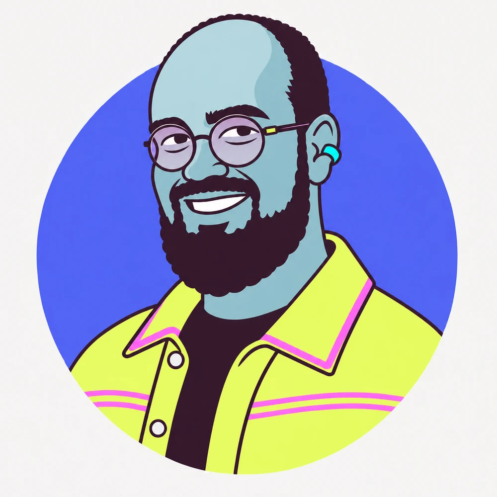
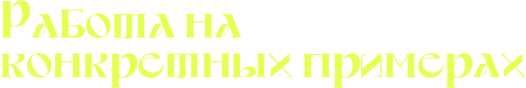
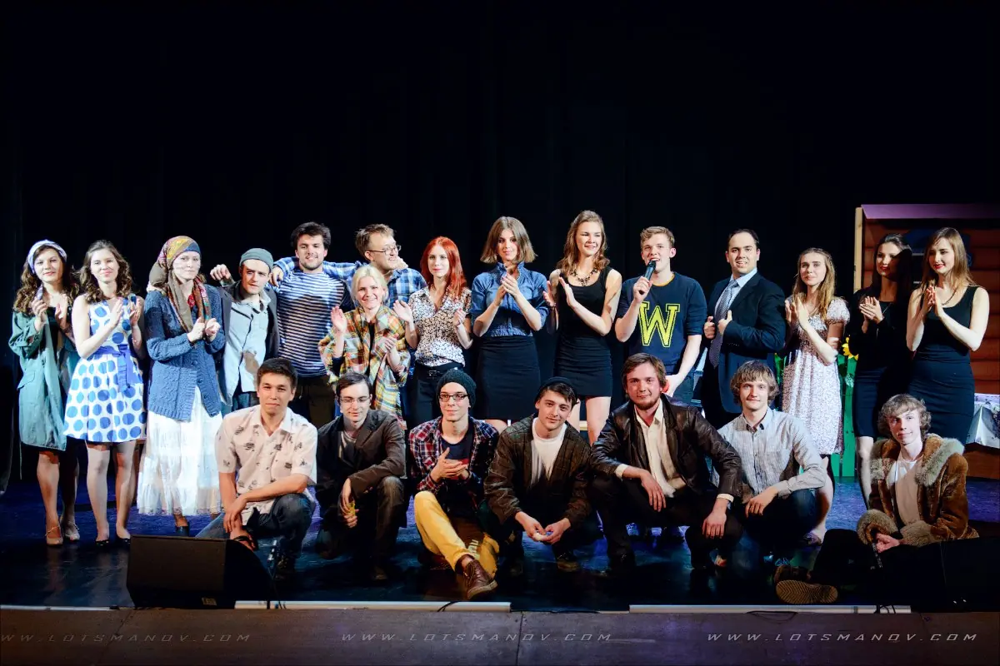
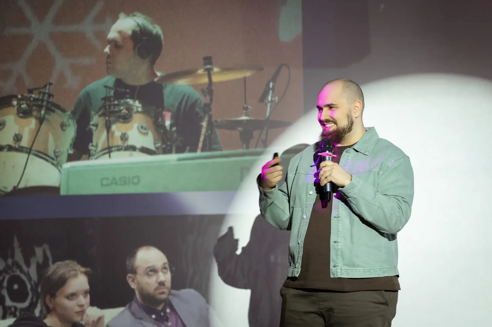
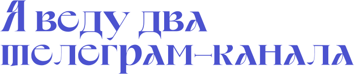

Ведёшь проект или бизнес
Сам ищешь первых клиентов, выбираешь между направлениями роста или пытаешься договориться с сооснователем. Возможно, проект держится на привычке и пора решить, продолжать ли его.
Твой персональный бизнес-психолог, коуч, технарь, который поможет с вайбкодингом и принятием сложных решений легко для роста твоего бизнеса или выхода из найма.

Тебе пора принять решение, а вариантов слишком много. Или ты уже знаешь, что делать, но всё откладываешь первый шаг.
Сам ищешь первых клиентов, выбираешь между направлениями роста или пытаешься договориться с сооснователем. Возможно, проект держится на привычке и пора решить, продолжать ли его.
Или только учишься его продавать. Хочешь поднять цену, перейти от работы один на один к другому формату или понять, почему после предложения люди пропадают.
Есть идея, пет-проект или умение собрать прототип. Нужно выбрать, кому это может пригодиться, и проверить идею, пока ты ещё в найме.
Формат не подойдёт, если ты хочешь передать мне решение или получить подтверждение того, что уже решил, без готовности проверить свои предположения. Для регулярной работы важно выделять время на пробы между встречами.
Вникаю в то, как ты видишь ситуацию, и вместе с тобой ищу способ сдвинуть её с места.
Разберём, куда ты хочешь прийти и где находишься сейчас. Разложим путь на этапы и выберем, что проверить первым.

Сформулируем результат и признаки, по которым ты поймёшь, что приблизился к нему.
Посмотрим на опыт, компетенции, время и то, что сейчас мешает двигаться.
Выберем приоритет, отложим лишние ветки и договоримся о том, что ты сделаешь на этой неделе.
На следующей встрече разберём результат пробы и уточним маршрут. Даже неудачная попытка помогает принять следующее решение.

Как выглядит работа, когда решение ещё предстоит принять.
Данных о рынке не хватало. Выбрали гипотезы, которые можно проверить звонками. Команда поговорила с конкурентами и с компаниями, которые уже пользуются такими решениями.
За две недели работы в акселераторе выбрали сегменты, в которых стоило провести интервью с потенциальными клиентами.
Допустим, ты ведёшь индивидуальные уроки и хочешь попробовать группу. На встрече выберем, для каких учеников она, и сформулируем приглашение. За неделю можно предложить пробное занятие нескольким семьям и посмотреть, кто готов записаться и оплатить.
Берём одно решение. Разбираем варианты и выбираем действие, которое ты можешь проверить.
Строим маршрут к цели. Между встречами ты пробуешь шаги, а на встречах мы сверяем результат и меняем план по фактам.
В МФТИ я учился разбирать сложное, в театре — работать с вниманием. Потом собирал цифровые продукты, а в Anix соединил это с предпринимательством.
Молекулярная биофизика, структурная биология, моделирование и публикации.
Авторская и режиссёрская работа, актёрский опыт, семь лет преподавания драматургии.
Цифровые команды, гипотезы, MVP, работа с рынком и сложными заказчиками.
В Anix соединяю стратегию, режиссуру, R&D и продуктовые решения.
Работаю с задачами разного масштаба: от роста дохода репетитора до B2C-продуктов и проектов в нефтегазе, химии и блокчейне.
«Я пять лет работал учёным в молекулярной биофизике. В технологический проект погружаюсь до уровня, на котором мы можем вместе определить, что делать с продуктом и как двигаться в бизнесе».Наука в медицинских проектах →
В театре «Точка» МФТИ я работал как автор, актёр и режиссёр, а затем семь лет преподавал драматургию. Пишу прозу и сценарии. В коммерческих проектах этот опыт помогает понять конфликт, движение истории и причину досмотреть её до конца.



В одном пишу про предпринимательство и строительство компании. В другом — про сценарии, театр, прозу и музыку.
Хочешь посоветоваться о своём бизнесе, проекте или следующем шаге в карьере? Напиши мне. Я сам прошёл путь из найма в предпринимательство и буду рад поговорить.